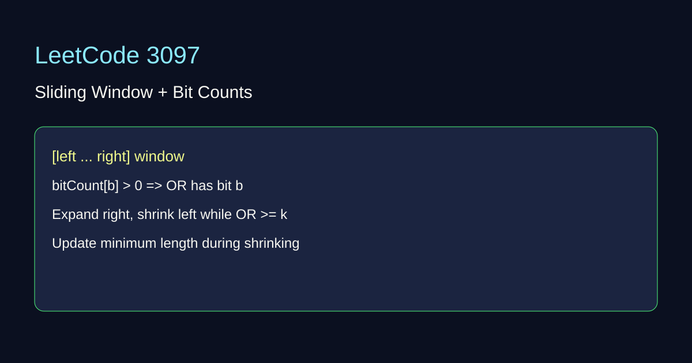

LeetCode 3097: Shortest Subarray With OR at Least K II (Bit Manipulation / Sliding Window)
LeetCode 3097Bitwise ORTwo PointersGiven nums and k, find the minimum length of a non-empty subarray whose bitwise OR is at least k.
Source: https://leetcode.com/problems/shortest-subarray-with-or-at-least-k-ii/

English
Idea
Use a sliding window. Maintain how many numbers in window have each bit set. From these counts we can rebuild current window OR in O(32).
Algorithm
1) Expand right pointer, add bits of nums[r].
2) While current OR ≥ k, update answer and shrink from left.
3) Remove bits of nums[l] while shrinking.
Complexity
Time: O(32n), Space: O(32).
Reference Implementations (Java / Go / C++ / Python / JavaScript)
class Solution { public int minimumSubarrayLength(int[] nums, int k) { int[] cnt=new int[32]; int left=0,ans=Integer.MAX_VALUE,or=0; for(int right=0;right>b)&1)==1){ if(cnt[b]==0) or|=(1<=k){ ans=Math.min(ans,right-left+1); int y=nums[left++]; for(int b=0;b<32;b++) if(((y>>b)&1)==1){ cnt[b]--; if(cnt[b]==0) or&=~(1< func minimumSubarrayLength(nums []int, k int) int { cnt:=make([]int,32); left:=0; ans:=1<<30; cur:=0; for right,x:= range nums { _=right; for b:=0;b<32;b++ { if (x>>b)&1==1 { if cnt[b]==0 { cur |= 1<=k { if right-left+1>b)&1==1 { cnt[b]--; if cnt[b]==0 { cur &^= 1< class Solution { public: int minimumSubarrayLength(vector& nums, int k) { vector cnt(32); int left=0, ans=INT_MAX, cur=0; for(int right=0; right<(int)nums.size(); ++right){ int x=nums[right]; for(int b=0;b<32;b++) if((x>>b)&1){ if(cnt[b]==0) cur|=(1<=k){ ans=min(ans,right-left+1); int y=nums[left++]; for(int b=0;b<32;b++) if((y>>b)&1){ cnt[b]--; if(cnt[b]==0) cur&=~(1< class Solution:
def minimumSubarrayLength(self, nums, k):
cnt=[0]*32
left=0
cur=0
ans=float('inf')
for right,x in enumerate(nums):
for b in range(32):
if (x>>b)&1:
if cnt[b]==0:
cur |= 1<=k:
ans=min(ans,right-left+1)
y=nums[left]; left+=1
for b in range(32):
if (y>>b)&1:
cnt[b]-=1
if cnt[b]==0:
cur &= ~(1<var minimumSubarrayLength = function(nums, k) { const cnt=Array(32).fill(0); let left=0, cur=0, ans=Infinity; for(let right=0; right>>b)&1){ if(cnt[b]===0) cur|=(1<=k){ ans=Math.min(ans,right-left+1); const y=nums[left++]; for(let b=0;b<32;b++){ if((y>>>b)&1){ cnt[b]--; if(cnt[b]===0) cur&=~(1< 中文
思路
使用滑动窗口，维护窗口内每一位的出现次数。某一位计数大于 0，则窗口 OR 的该位为 1。
步骤
1）右指针扩展并加入位信息。
2）当窗口 OR ≥ k 时，尝试左移收缩并更新最短长度。
3）左移时移除位信息并动态维护 OR。
复杂度
时间复杂度 O(32n)，空间复杂度 O(32)。
多语言参考实现（Java / Go / C++ / Python / JavaScript）
class Solution { public int minimumSubarrayLength(int[] nums, int k) { int[] cnt=new int[32]; int left=0,ans=Integer.MAX_VALUE,or=0; for(int right=0;right>b)&1)==1){ if(cnt[b]==0) or|=(1<=k){ ans=Math.min(ans,right-left+1); int y=nums[left++]; for(int b=0;b<32;b++) if(((y>>b)&1)==1){ cnt[b]--; if(cnt[b]==0) or&=~(1< func minimumSubarrayLength(nums []int, k int) int { cnt:=make([]int,32); left:=0; ans:=1<<30; cur:=0; for right,x:= range nums { _=right; for b:=0;b<32;b++ { if (x>>b)&1==1 { if cnt[b]==0 { cur |= 1<=k { if right-left+1>b)&1==1 { cnt[b]--; if cnt[b]==0 { cur &^= 1< class Solution { public: int minimumSubarrayLength(vector& nums, int k) { vector cnt(32); int left=0, ans=INT_MAX, cur=0; for(int right=0; right<(int)nums.size(); ++right){ int x=nums[right]; for(int b=0;b<32;b++) if((x>>b)&1){ if(cnt[b]==0) cur|=(1<=k){ ans=min(ans,right-left+1); int y=nums[left++]; for(int b=0;b<32;b++) if((y>>b)&1){ cnt[b]--; if(cnt[b]==0) cur&=~(1< class Solution:
def minimumSubarrayLength(self, nums, k):
cnt=[0]*32
left=0
cur=0
ans=float('inf')
for right,x in enumerate(nums):
for b in range(32):
if (x>>b)&1:
if cnt[b]==0:
cur |= 1<=k:
ans=min(ans,right-left+1)
y=nums[left]; left+=1
for b in range(32):
if (y>>b)&1:
cnt[b]-=1
if cnt[b]==0:
cur &= ~(1<var minimumSubarrayLength = function(nums, k) { const cnt=Array(32).fill(0); let left=0, cur=0, ans=Infinity; for(let right=0; right>>b)&1){ if(cnt[b]===0) cur|=(1<=k){ ans=Math.min(ans,right-left+1); const y=nums[left++]; for(let b=0;b<32;b++){ if((y>>>b)&1){ cnt[b]--; if(cnt[b]===0) cur&=~(1<
Comments